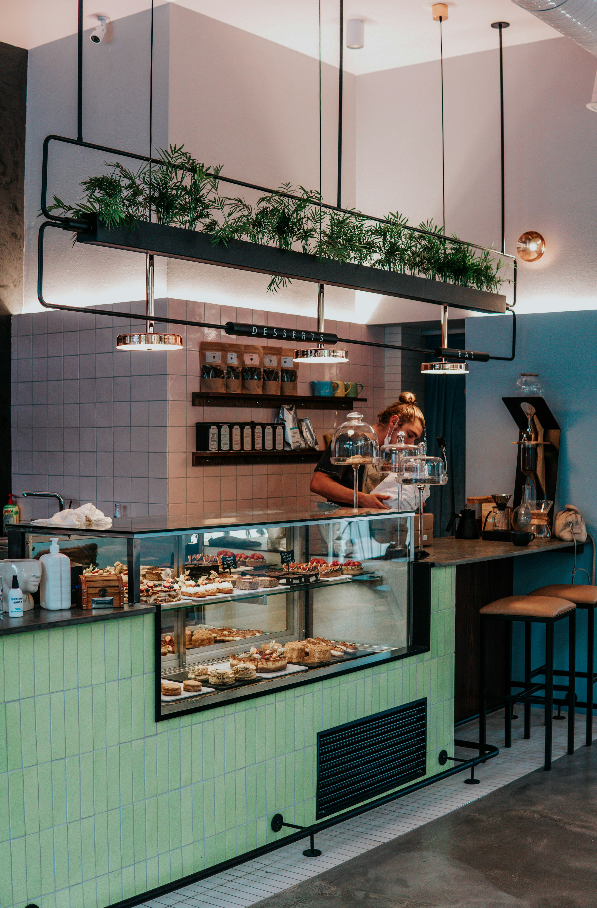
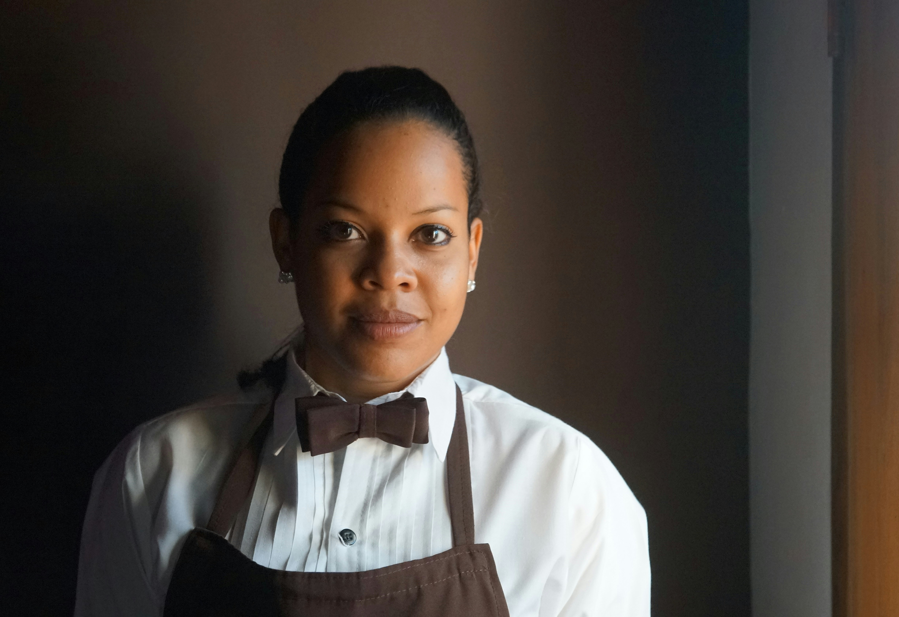

Our background story – where the magic began

Growing up, I was grandma’s taste tester every Sunday after church. I sat on a chair in her flour‑dusted kitchen learning that the best recipes are not found in a book – they are felt. She taught me that a perfect crust requires cold butter and a warm heart. After granny passed away, baking became my way of staying connected to her. When friends and family started offering to pay for grandma’s style, I realised that her legacy was too good not to share. That is how Cake Heaven started on 20 May 2022.
MISSION
Our mission is to share the joy of homemade cakes with families and friends, keeping traditions alive while making ordering simple and convenient. We believe every cake tells a story – one of celebrations, love, and creativity.
VISION
To become an established provider of homemade cakes that you can trust to deliver excellent products with caring service, blending old baking traditions with new technology.
TARGET MARKET
For those who long for homemade taste, busy moms, conscious local shoppers, and anyone celebrating life's moments – birthdays, weddings, and more.
Meet our heart & soul
HEAD BAKER
Aminah Nyundu

HEAD DECORATOR
Luyanda Nyundu
